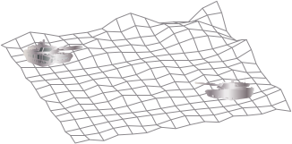

Determine whether each statement is true or false in
Two lines parallel to a third line are parallel.
Two lines perpendicular to a third line are parallel.
Two planes parallel to a third plane are parallel.
Two planes perpendicular to a third plane are parallel.
Two lines parallel to a plane are parallel.
Two lines perpendicular to a plane are parallel.
Two planes parallel to a line are parallel.
Two planes perpendicular to a line are parallel.
Two planes either intersect or are parallel.
Two lines either intersect or are parallel.
A plane and a line either intersect or are parallel.
The line through the point
The line through the point
The line through the point
The line through the point
The line through the points
The line through the origin and the point
The line through the points
The line through the points
The line through
The line through
The line of intersection of the planes
Is the line through
Is the line through
Find symmetric equations for the line that passes through the point
Find the points in which the required line in part (a) intersects the coordinate planes.
Find parametric equations for the line through
In what points does this line intersect the coordinate planes?
Find a vector equation for the line segment from
Find parametric equations for the line segment from
19, 20, 21 and 22 Determine whether the lines
23, 24, 25, 26, 27, 28, 29, 30, 31, 32, 33, 34, 35, 36, 37, 38, 39 and 40 Find an equation of the plane.
The plane through the point
The plane through the point
The plane through the point
The plane through the origin and perpendicular to the line
The plane through the point
The plane through the point
The plane through the point
The plane that contains the line
The plane through the points
The plane through the origin and the points
The plane through the points
The plane through the points
The plane that passes through the point
The plane that passes through the point
The plane that passes through the point
The plane that passes through the points
The plane that passes through the point
The plane that passes through the line of intersection of the planes
Where does the line through
Find direction numbers for the line of intersection of the planes
Find the cosine of the angle between the planes
51, 52, 53, 54, 55 and 56 Determine whether the planes are parallel, perpendicular, or neither. If neither, find the angle between them. (Use degrees and round to one decimal place.)
Find parametric equations for the line of intersection of the planes.
Find the angle, in degrees rounded to one decimal place, between the planes.
Find an equation for the plane consisting of all points that are equidistant from the points
Find an equation for the plane consisting of all points that are equidistant from the points
Find an equation of the plane with
Find the point at which the given lines intersect:
Find an equation of the plane that contains these lines.
Find parametric equations for the line through the point
Find parametric equations for the line through the point
Which of the following four planes are parallel? Are any of them identical?
Which of the following four lines are parallel? Are any of them identical?
69 and 70 Use the formula in Exercise 12.4.45 to find the distance from the point to the given line.
Distance between Parallel PlanesShow that the distance between the parallel planes
Find equations of the planes that are parallel to the plane
Show that the lines with symmetric equations
Find the distance between the skew lines with parametric equations
Let
Let
Two tanks are participating in a battle simulation. Tank A is at point
Find parametric equations for the line of sight between the tanks.
If we divide the line of sight into

Give a geometric description of each family of planes.
If
Hint: Suppose